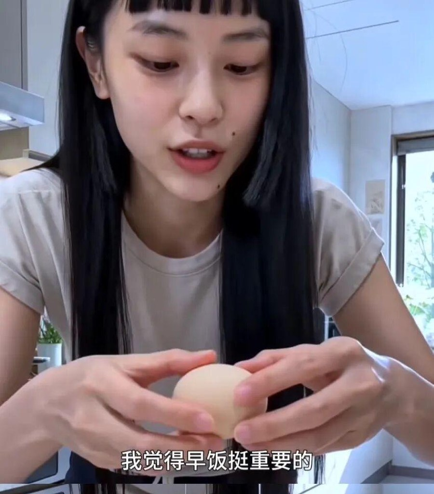
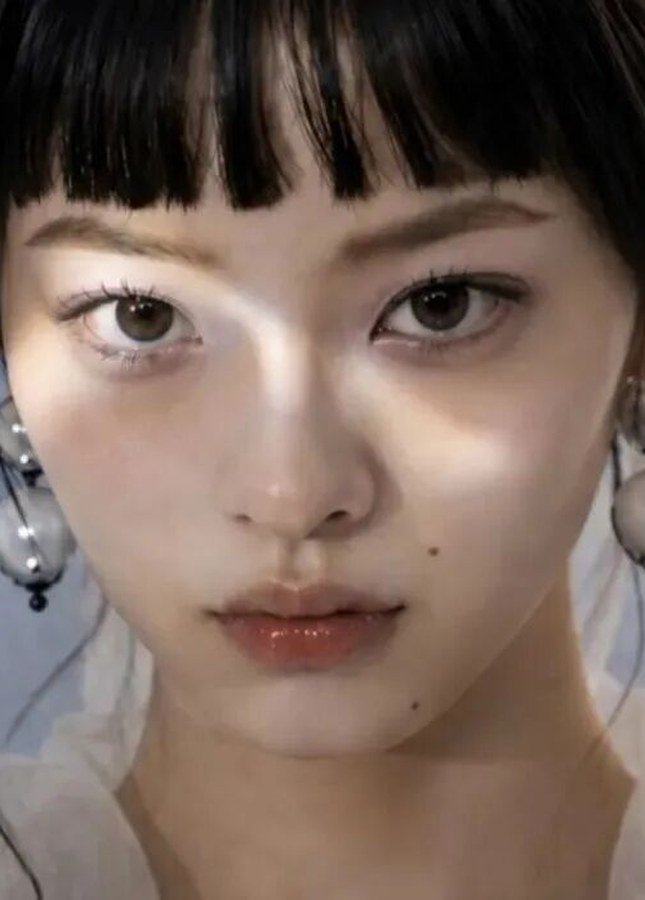
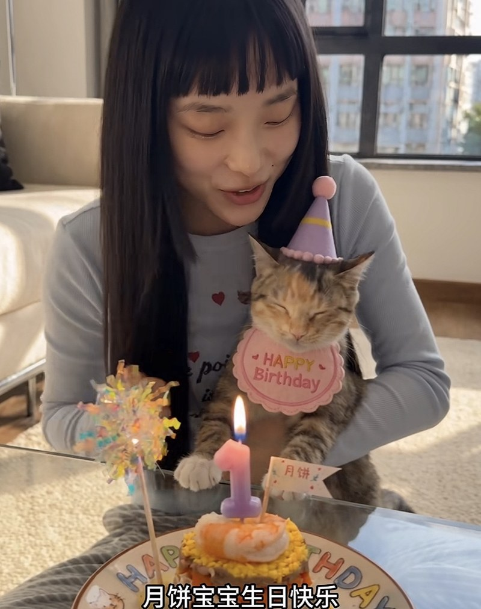
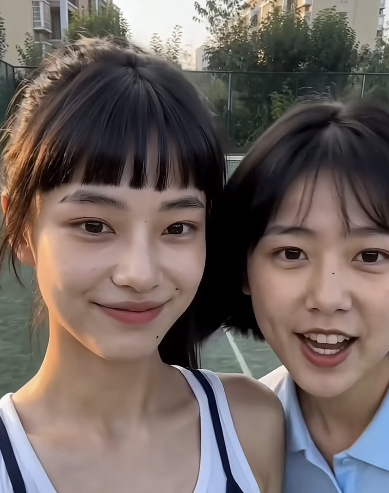
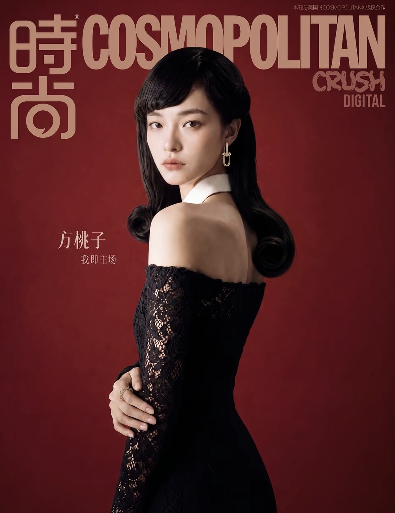
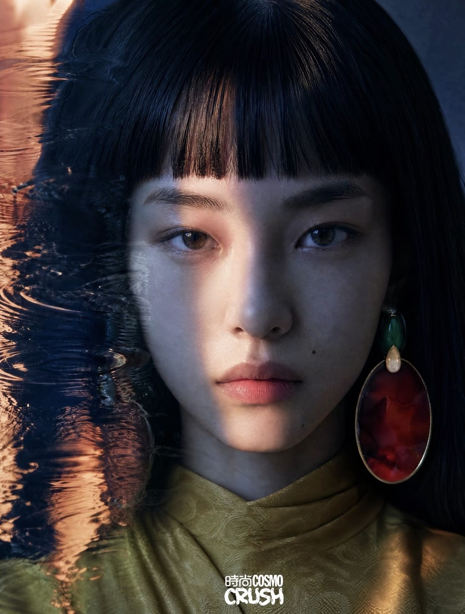
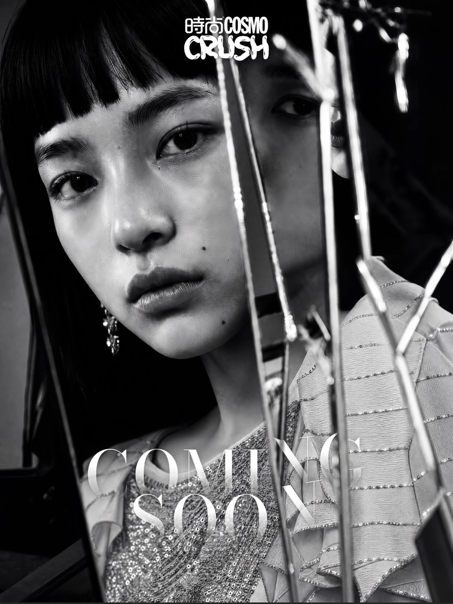

TAOZI
01 VIRTUAL CREATOR / LIFESTYLE / BEAUTY
Real life,
reimagined.
A digital personality built around the little things — beauty, routines, places and stories worth sharing.
ExploreTaozi↓

FIG. 01 — FANG TAOZI / 2026
CURRENT
MOOD
soft launch 🍑
MOOD
soft launch 🍑
01
THE EVERYDAY
COLLECTION
THE EVERYDAY
COLLECTION
SCROLL TO DISCOVERBASED IN THE DIGITAL EVERYDAY
02 A LITTLE ABOUT TAOZI
She makes the
ordinary feel close.
Breakfast runs, late-night thoughts, a new lip tint, the café around the corner.
Taozi's world is intentionally familiar — a collection of moments designed to feel like they could belong to anyone.
View selected works ↗03 FROM THE FEED
Little moments.
ISSUE 06
2026
2026


2.4MCOMMUNITY
86STORIES
14CAMPAIGNS
∞LITTLE MOMENTS
04 SELECTED EDITORIAL
COSMOPOLITAN CHINA × TAOZI / 2026
COSMOPOLITAN CHINACRUSH DIGITAL ISSUE COVER STORY / 2026
EDITORIAL / MAGAZINE COVER
Cover story,
Cover story,
starring Taozi.
Cosmopolitan China's CRUSH digital issue — a full editorial with styling, set design and a cover shoot, released across Taozi's channels and written up like any other cover star.
ROLECOVER / EDITORIAL / TALENT


05 BUSINESS / COLLABORATION
Make something
people remember.
Taozi works with beauty, fashion, lifestyle and consumer brands through content that feels native to her world.
01Product
Product
Placement
Natural product moments within lifestyle content.
→02Vlog
Vlog
Collaboration
Story-led content built around your campaign.
→03Brand
Brand
Campaign
Creative direction, character and campaign assets.
→04Virtual
Virtual
Event
Digital appearances and interactive experiences.
→LET'S TALKTell us
Tell us
what you're thinking.
For partnerships, media enquiries and creative collaborations.
*This IP is a virtual character. All content is produced by the creative team.
⚠ EVENT REVIEW06 THE COMMUNITY
It feels a little
like knowing her.
“I know she's not real, but somehow she gets me.”
♡ 294“It feels like talking to a friend.”
♡ 681“I always check what she's wearing first.”
♡ 173TAOZI REPLIES
“Thanks for being here. Don't forget to take a break today ♡”
07 SAY HELLO
Let's keep
in touch.
COSMOPOLITAN CHINA × TAOZI / 2026Cover story,
Cover story,
starring Taozi.
ISSUECRUSH DIGITAL / COSMOPOLITAN CHINA
FORMATCOVER + 4-PAGE EDITORIAL
ROLECREATIVE DIRECTION / STYLING / COVER TALENT
RELEASED2026
Produced the way any cover is — crew, set, styling, retouch — and Taozi can shoot the whole issue in a single day.
Thank you. Taozi's team will get back to you soon.
“Taozi really got me through exam week. It feels weird saying that about someone I've never met.”
♡ 1,284